Finding Optimal Robot Motion
Bryce Willey
November 16th, 2017


Robots can...
- assist people with disabilities/immobility
- complete tasks that are unsafe or impossible for humans
Automating these tasks means allows widespread deployment
Motion planning is essential to automation.
Feasible Motion Planning

- Finds a connected path from start to goal
- Doesn't collide with any obstacles
Optimal Motion Planning
- Assigns a cost to every path
- Finds a feasible path that minimizes the cost

Pros
- If a solution exists, it will be found
- Very reliable
- Can find optimal paths
Cons
- Must smooth the path after finding it
- Finding optimal paths is time consuming

Pros
- Fast! (5-10x by our experiments)
- Quality, smooth paths
Cons
- No guarantee of finding a feasible path
- Not as reliable as sampling planners
Currently, no rigorous comparisons in the literature
Optimization planners do special 'tricks' to speed up planning
What really makes optimization planners faster?


Abstract the 'tricks' from the planners
Test on a wider variety of planning problems
Use sampling and optimization together: quality motion and faster convergence
Sampling planners and optimization planners both have pros and cons
Optimization Planners are still not reliable enough to be used safely